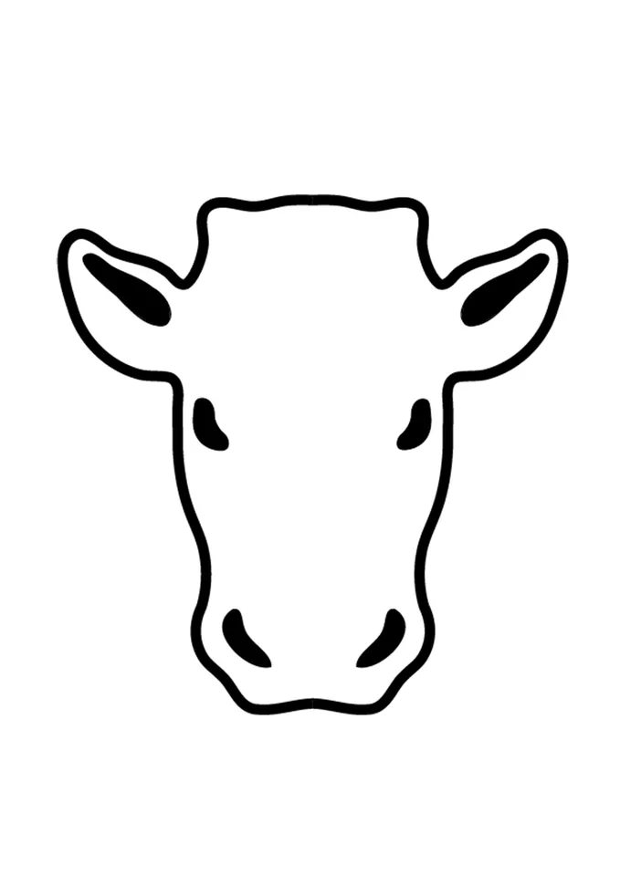

Deze portfolio bevat expliciete thema’s en beeldmateriaal met betrekking tot geweld, zware misdrijven en andere confronterende onderwerpen. Kijkers wordt aangeraden voorzichtig te zijn. Door deze pagina te openen, bevestigt u dat u in uw rechtsgebied meerderjarig bent en dat u ermee instemt om gevoelig materiaal te bekijken. De getoonde inhoud maakt deel uit van een artistieke context en is niet bedoeld om geweld of crimineel gedrag te verheerlijken of aan te moedigen.
Annelies Van Damme (° 1998) ) is een hedendaags kunstenaar wier werk thema’s als macht, gender en seksualiteit, en de complexiteit van oorlog en misdaad verkent. Door middel van gedurfde schilderkunst en provocerende beelden daagt ze maatschappelijke normen uit, waarbij ze vaak haar eigen naakte lichaam in found footage van pornowebsites of ander gewelddadig beeldmateriaal plaatst. Ze wil een nepwereld vol seksualisering en een echte, gewelddadige wereld onderzoeken en met elkaar vergelijken, om uiteindelijk te laten zien hoe die twee vaker wel dan niet één en hetzelfde zijn. Annelies scheurt schaamteloos wonden open die haar publiek liever negeert. Daarmee weet ze rauwe emoties op te roepen en tot nadenken aan te zetten, waarbij ze kijkers uitnodigt om na te denken over hun eigen perceptie van deze machtsverhoudingen en hun eigen medeplichtigheid aan dit geweld. Haar schilderijen zijn monumentaal en helder, druipend van de verf en soms gescheurd en beschadigd met spijkers. Als je voor een van Annelies’ schilderijen staat, is het moeilijk om weg te kijken. Je wordt gedwongen deel uit te maken van de gewelddadige dynamiek die zich voor je afspeelt en een keuze te maken: blijven kijken of weglopen.
A crucifixion; Deepthroat Choke I
A crucifixion; Deepthroat Choke II
A crucifixion; Deepthroat Choke III
A crucifixion; Deepthroat Choke Triptych
Deepthroat Choke in a Cornfield